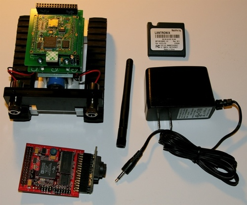
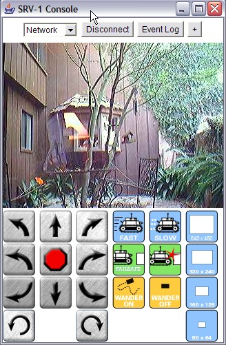

Surveyor SRV-1 Blackfin Setup
Unpack
- First unpack the SRV-1 robot, battery charger, SRV-1 Blackfin Camera Board, and antenna. You'll also find a cover plate for the Lantronix Matchport - it came with the Matchport module, but has no function.

- Note that there is a small block of double-sided mounting tape on the radio module that acts as a spacer between the radio board and camera board. You can remove the tape cover so that it is sticky, or leave the cover in place. If the tape is sticky, it will hold the camera board more securely.
- Make certain that the run/charge switch is in the UP ("chg") position. Install the SRV-1 Blackfin Camera Board and attach the antenna to the connector. The Li-ion battery pack is probably already charged, but you can recharge the battery by first plugging in the charger to the robot with the power switch in the up position, and then plugging the charger into the wall. Charging shouldn't take more than 2 hours.
- Once assembled, the robot should look like this:
Software setup
There are two main steps in SRV-1 software setup - configuration of the Matchport WLAN module, and installation of the SRV1Console software:
- download and unzip the java console software from the download page. If you create a \SRV (/SRV) directory, and unzip everything into that directory, you'll end up with a bunch of .class and .jar files, along with applet, archive and buttons subirectories.
On Windows, create a desktop icon for SRV1Console.exe and double-click to launch.
Alternatively, from a
Windows command prompt ("Run cmd"), assuming you have Java 1.4.2 or later installed, type
cd \SRV
java -cp .;RXTXcomm.jar;ImageButton;wstreamd_embed.jar; SRV1Console
On a Mac or Linux, from a terminal shell, type
cd /SRV
java -cp .:RXTXcomm.jar:ImageButton:wstreamd_embed.jar: SRV1Console
Note - there are several command line options for SRV1Console
- -c connects SRV1Console to the robot via the most recently used com port or network connection
- -p xxxx where xxxx = Port Number, changes port number of WebcamSat module from default 8888
These options can be used in any order, and also work from the Windows SRV1Console.exe command line, e.g.
> java -cp .:RXTXcomm.jar:ImageButton:wstreamd_embed.jar: SRV1Console -c -p 9999 (from Mac/Linux)
> java -cp .;RXTXcomm.jar;ImageButton;wstreamd_embed.jar; SRV1Console -c (from Windows)
> SRV1Console -p 9999 -c (from Windows)
Also note - on the Mac, you may need to download
"RXTX-for-Mac.zip" to install the RXTX serial comm library. You can also download the latest RXTX files from http://www.rxtx.org
Once your WLAN has been correctly configured, you should end up with a display that looks like this:

- One more quick note - the SRV-1 should arrive with the latest firmware, but in case it doesn't, the instructions for installing firmware are found further down in this document - click here for instructions on how to update the firmware.
- Turn on the SRV-1 robot so that the Matchport is powered. Start your wireless network manager program, and connect to the SRV1 adhoc network (if we didn't configure the Matchport, it might instead be the LTRX_IBSS adhoc network). Note that the screenshot shows Matchport, but the setup is the same for the Matchport.
- You should now be able to connect to the Matchport via your browser. We have configured the Matchport modules by default to IP address 169.254.0.10, so point to http://169.254.0.10. There are no passwords set, so just hit 'enter' if you get a message asking for passwords.
IMPORTANT NOTE - if your host computer is configured for a static IP address instead of using DHCP to set its IP address, you need to configure your computer to use DHCP, at least for communication with the Matchport, or you need to assign a static IP address in the 169.254.xxx.xxx subnet. This is because the Matchport acts as a DHCP server for the "SRV1" adhoc network, assigning addresses in the 169.254.xxx.xxx subnet, and if your host computer has a static IP address of 192.168.1.27, it would never be able to communicate with 169.254.0.10 because the network driver won't know how to route packets to a different subnet without explicit routing instructions.
- If we configured the Matchport, then the serial port should already be configured correctly for 921600kbps with hardware flow control.
- Now edit srv.config in the SRV1Console directory. Add a network entry that has the IP address of your Matchport module.
- At this point, you should be able to connect to the SRV-1 using SRV1Console and the Matchport.
- The final steps are to configure the Matchport to your infrastructure network instead of just connecting via the adhoc network. If you aren't familiar with WiFi network configuration, ask for some help. If you use the wrong settings, the Matchport won't be reachable, and you will physically have to remove it from the robot to reprogram via the alternative setup below.
Make certain that you know the SSID of the wireless network you plan to use, and also make certain to find a free IP address, as you need to configure the Matchport with a static IP (or you won't know how to reach it).
First change the WLAN settings from the SRV1 adhoc network to your infrastructure network -

Next change the IP address from the adhoc IP 169.254.0.10 to the IP address of your network -
Click on Apply Settings. If you've done this correctly, the SRV1 network will disappear and your host computer will connect to the infrastructure WLAN. From here, confirm that you can reach the robot Matchport via your browser at the new IP address, then edit srv.config to set the new IP address of the robot, and try to connect via SRV1Console.
Operation
- Switch the robot power switch to the down (RUN) position. You should see a red LED on the SRV-1 Blackfin Camera Board light up, followed within a few seconds by some flashes of the yellow LEDs.
Select "Network" in the SRV1Console drop-down box. Push the "connect"
button on the Java console, and you should start to see pictures.
The control buttons might not be completely obvious, except perhaps for Forward and Back (up and down arrows). The upper steering buttons will allow the robot
to drift left or right, and the lower steering buttons make fairly hard turns forward left/right or back left/right. The red button in the middle is STOP. There are 2 other
steering buttons for rotating left/right approx 20-degrees, and the right-hand image buttons set resolution to 1280x1024, 640x512, 320x254, or 160x128, with correspondingly different frame rates. The fast/slow buttons will increase/decrease motor speed, though they don't take effect until one of the direction buttons is pushed.
Note: additional robot functions are actively in development, so this display may change when firmware and java console software are updated.
Also note: you can create your own buttons, edit the button assignments (e.g. changing the speed setting assigned to specific motion buttons), and change the button layout by editing the srv.config file and the button images in the SRV1Console/buttons subdirectory. The commands that are issued from SRV1Console are actually defined in
http://www.surveyor.com/blackfin/SRV_protocol_bf.html
with the hex ascii representation of those commands coded into the srv.config button assignments, as seen here -
- SRV1Console includes a web server module called "WebcamSat" that enables remote network or Internet access to SRV-1 robot control. Once SRV1Console is launched, you'll see some messages in the command window that should look like this:
indicating that the WebcamSat module is functioning, and the base station console can be remotely accessed via a local network or Internet.
- To remotely control the console through the Internet or local network. Point your browser to
http://ip-address-of-base-station-computer:8888/view

- The WebcamSat module allows you to configure user access control, and also has an archiving function. To access the admin functions of WebcamSat, go to
http://ip-address-of-base-station-computer:8888/admin
default user: webcamsat password: admin
(these can be changed through the setup menu accessed via the admin page)
Click on the "Admin Tools", and then click on "Schedule New Archive" if you want to schedule an archive:
Archives are stored in AVI format, but are easily converted to other formats such as Quicktime.
- More information on WebcamSat is found here
Firmware updates
The SRV-1 uses a simple file upload mechanism based on XMODEM / XMODEM-1K protocols. There is a memory buffer allocated on the Blackfin for handling incoming file uploads, and then several commands for writing the memory buffer to different areas of onboard flash memory.
The most important commands to know about are these -
- 'X' - this command puts the SRV-1 into XMODEM / XMODEM-1K receive mode. It is ideal if you have a terminal program that can make a TCP connection and also transfer files with XMODEM or XMODEM-1K. We have tested this capability with mxOSX on OS/X, and TeraTerm on Windows. If you don't have a terminal program that combines TCP connection and XMODEM, you can use a script that combines nc (netcat) with sx or lsz (from lrzsz)
There's also a Python-based program written by one of the SRV-1 users to completely automate this firmware upload process. Download link is here - http://weirdzone.ru/~veider/flashloader.py, with a backup copy located here - http://www.surveyor.com/blackfin/flashloader.py
- From your terminal program, send the 'X' command to initiate XMODEM transfer. From your terminal program, you may have send ENTER after 'X' if you are not in char mode. After you send 'X', you should see a series of 'CCC' characters indicating that the SRV-1 is waiting for the XMODEM transfer. From your terminal program, start the file transfer of srv1.ldr.
- On Linux, use the following script:
echo send X [enter] to initiate XMODEM transfer
echo once you see CCC... characters, send control-C
nc 169.254.0.10 10001
sx -Xkbv --tcp-client 169.254.0.10:10001 srv1.ldr
sleep 1
echo if transfer completed successfully, send zZ [enter] to write srv1.ldr to flash
nc 169.254.0.10 10001
During the actual transfer, you should see a message sequence like:
connecting to [169.254.0.10] <10001>
Sending srv1.ldr, 274 blocks: ...
Transfer complete
- On Windows with TeraTerm, when you connect, the host is the IP address of the SRV1, the TCP port is 10001, and you want to UNCHECK Telnet. If you leave Telnet selected, you will have problems with file transfer. As soon as you connect, send a 'V' to get the version string - that will let you know that things are working. To transfer a file, send 'X' to start XMODEM receive on the SRV-1, then from Tera Term, select:
File .. Transfer .. XMODEM .. send
and select your file, or from the keyboard, use these shortcuts:
ALT-F .. T .. X .. S
From your terminal program, you should see:
##Xmodem success. Count: 33792
- If you do not see a message indicating successful transfer, try the transfer again. Do not write the buffer contents to flash memory until you are certain you had a good XMODEM transfer, or you may clobber the boot memory contents and the SRV-1 won't reboot.
- After successfully completing the transfer, don't forget to issue the zZ command described below to write the new firmware to flash. The X command only transfers the firmware image to a temporary memory buffer, while the zZ command writes that buffer to flash.
- 'zZ' - this command writes the contents of the file transfer buffer to the boot sectors of onboard flash memory. It does check that there is a valid boot image in memory before writing. If successful, you will see this message -
"##zZ boot image write count: 131072"
At this point, you can reboot the processor (shorting pins 1-2 on J1 header), and you should see the new firmware load.
- Note that if you somehow clobber the flash memory boot sector, it is possible to reload the firmware through the serial port using the Blackfin's UART boot mode. The procedure to use this is described in the Troubleshooting section of the Surveyor Robotics Forum.
- Also note that if you plan to run linux, you'll need to upload u-boot in place of srv1.ldr. You can use the procedure above with 'X' and 'zZ', but upload u-boot.ldr instead of srv1.ldr. Make note of the UART configuration on the Matchport if you are transferring via LAN, as srv1.ldr might be set up for 921kbps with hardware flow control, and u-boot might be set up for 57.6k or 115.2kbaud with no flow control. When we formally release the linux version of SRV-1 firmware, we'll have a separate web page documenting the setup.